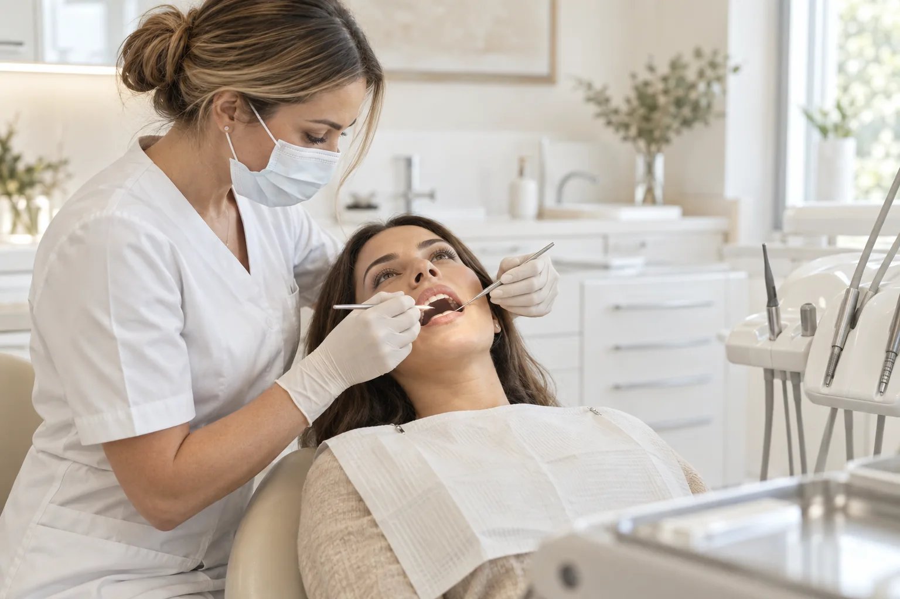

Perto de você
Atendimento em Lagoa Nova,
Natal/RN.

Cuidado com a saúde bucal e a estética facial em sintonia com você. Uma abordagem individualizada, com atenção à naturalidade e ao seu bem-estar.
Agende uma avaliaçãoAtendimento em Lagoa Nova,
Natal/RN.
Residência pelo IOP e especialização em andamento pelo IAP.
Escuta e atenção aos detalhes em cada etapa do atendimento.
Planejamento que respeita suas características e necessidades.
Sou formada em Odontologia e atuo como Cirurgiã-Dentista, inscrita no CRO/RN sob o número 8516. Minha formação inclui residência em Harmonização Orofacial pelo IOP, e sigo aprofundando meus conhecimentos como especializanda em HOF pelo IAP.
Acredito em um cuidado que começa pela escuta. Meu trabalho une saúde bucal e estética facial, com planejamento individualizado, foco em resultados naturais e respeito ao bem-estar de cada paciente.
Saúde e estética, com um plano de cuidado pensado para cada pessoa.
Planejamento facial individualizado. Toxina botulínica, preenchimento labial e outros procedimentos conforme avaliação.
Converse sobre seu cuidadoCuidado para um sorriso mais luminoso, com avaliação da saúde bucal e orientação profissional.
Agende uma avaliaçãoPlanejamento da forma e da aparência dos dentes, respeitando a harmonia do seu sorriso.
Conheça as possibilidadesSaúde, função e estética juntas para construir um cuidado adequado às suas necessidades.
Agende uma avaliaçãoImagens ilustrativas. A indicação de cada procedimento depende de avaliação individual.
Espaço reservado para depoimentos reais de pacientes, publicados com autorização.
Seu relato sobre acolhimento e atenção durante a consulta poderá aparecer aqui.
Este espaço receberá uma experiência real sobre o cuidado com o sorriso.
Uma história de bem-estar e cuidado individualizado poderá ser compartilhada aqui.
O primeiro passo é uma conversa. Entre em contato para saber mais sobre o atendimento e agendar sua avaliação.